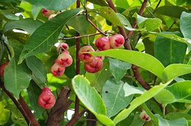

Basonym of Drug
Jambu
Main Synonym
- Phalendra
- Surabhipatra
- Jambava
- Kokilesta
- Pikabhaksha
Regional Name
- Bengali: kala jam
- Gujarati: jambu
- Hindi: jamun
- Tamil: saval naval
- Telugu: naredu chettu
- English: jamun
Botanical Name
Syzygium cumini
Family
Myrtaceae
Classification (Gana)
- Aacharya Charaka: Mutrasangahaniya, Chardinigrahana, Purishvirajaniya
- Aacharya Sushruta and Acharya Vagbhata: Nyagrodhadi Gana
External Morphology
10-12 feet medium tree
Useful Parts
Fruit, leaves, stem bark
Important Phytoconstituent
- Eugenia triterpenoids
- Malic acid
- Glucose
- Gallic acid
- Citric acid
- Myricetin
Rasa Panchak
- Rasa: Madhura, Kashaya, Amla
- Guna: Laghu, Ruksha
- Virya: Shita
- Vipaka: Katu
Action
Kaphapittahara, Vatavardhaka
Therapeutic Indication
- Grahi (reduces excessive secretions)
- Atisarahara (anti-diarrheal)
- Dahaprashamana (useful in burning sensations)
- Chardinigrahana (anti-emetic)
- Raktapittahara (useful in bleeding disorders)
Therapeutic Uses
- Raktapitta - Hima preparation of Jambu, Arjuna, and Amra is beneficial in bleeding disorders.
- Atisara - Powder of seed with buttermilk is given in diarrhea.
- Prameha - Seed powder/ tablet is given with honey in diabetes.
Dose
Seed powder - 3-6 gm, Fruit juice - 10-20 ml
Formulations
- Jambavadi Ghrita
- Jambavadi Taila
- Jambavasava
- Pushyanuga Churna
Adverse Effect
Not Known